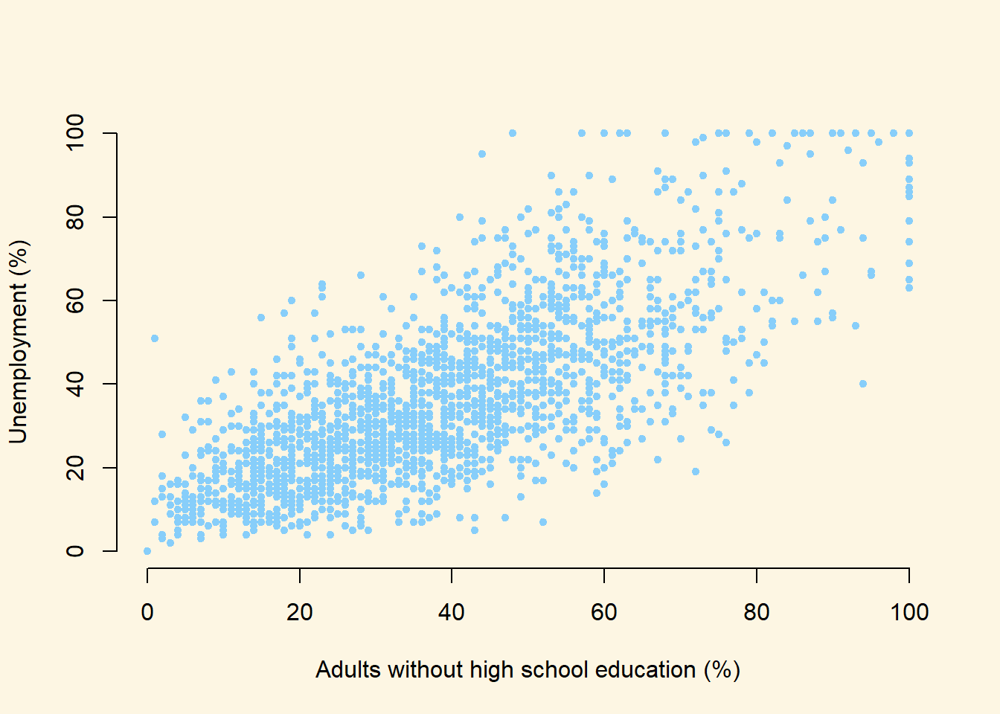
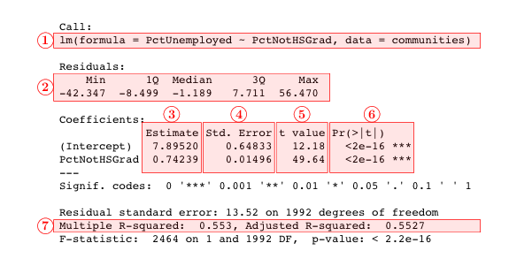
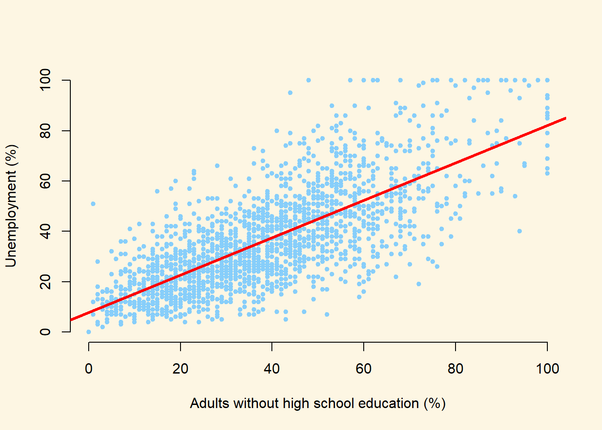

Chapter 7 Regression
7.1 Seminar
In this section, we will cover regression models. We will first introduce the bivariate linear regression model. We will then move to linear models with multiple independent variables.
7.1.1 Bivariate linear regression
We will use a dataset collected by the US census bureau that contains several socioeconomic indicators.
The dataset includes 38 variables but we’re only interested in a handful at the moment.
| Variable | Description |
|---|---|
| PctUnemployed | proportion of citizens in each community who are unemployed |
| PctNotHSGrad | proportion of citizens in each community who failed to finish high-school |
| population | proportion of adult population living in cities |
If we summarize these variables with the summary() function, we will see that they are both measured as proportions (they vary between 0 and 1):
Min. 1st Qu. Median Mean 3rd Qu. Max.
0.0000 0.2200 0.3200 0.3635 0.4800 1.0000 Min. 1st Qu. Median Mean 3rd Qu. Max.
0.0000 0.2300 0.3600 0.3833 0.5100 1.0000 It will be a little easier to interpret the regression output if we convert these to percentages rather than proportions. We can do this with the following lines of code:
communities$PctUnemployed <- communities$PctUnemployed * 100
communities$PctNotHSGrad <- communities$PctNotHSGrad * 100We can begin by drawing a scatterplot with the percentage of unemployed people on the y-axis and the percentage of adults without high-school education on the x-axis.
plot(
x = communities$PctNotHSGrad,
y = communities$PctUnemployed,
xlab = "Adults without high school education (%)",
ylab = "Unemployment (%)",
frame.plot = FALSE,
pch = 20,
col = "LightSkyBlue"
)
From looking at the plot, what is the association between the unemployment rate and lack of high-school level education?
In order to answer that question empirically, we will run a linear regression using the lm() function in R. The lm() function needs to know a) the relationship we’re trying to model and b) the dataset for our observations. The two arguments we need to provide to the lm() function are described below.
| Argument | Description |
|---|---|
formula |
The formula describes the relationship between the dependent and independent variables, for example dependent.variable ~ independent.variable In our case, we’d like to model the relationship using the formula: PctUnemployed ~ PctNotHSGrad |
data |
This is simply the name of the dataset that contains the variable of interest. In our case, this is the merged dataset called communities. |
For more information on how the lm() function works, type help(lm) in R.
7.1.2 Interpreting Regression Output
The lm() function has modeled the relationship between PctUnemployed and PctNotHSGrad and we’ve saved it in an object called model1. Let’s use the summary() function to see what this linear model looks like.
The output from summary() might seem overwhelming at first so let’s break it down one item at a time.

| # | Item | Description |
|---|---|---|
| 1 | formula | The formula describes the relationship between the dependent and independent variables |
| 2 | residuals | The differences between the observed values and the predicted values are called residuals. |
| 3 | coefficients | The coefficients for all the independent variables and the intercept. Using the coefficients we can write down the relationship between the dependent and the independent variables as: PctUnemployed = 7.8952023 + ( 0.7423853 * PctNotHSGrad ) This tells us that for each unit increase in the variable PctNotHSGrad, the PctUnemployed increases by 0.7423853. |
| 4 | standard error | The standard error estimates the standard deviation of the sampling distribution of the coefficients in our model. We can think of the standard error as the measure of precision for the estimated coefficients. |
| 5 | t-statistic | The t-statistic is obtained by dividing the coefficients by the standard error. |
| 6 | p-value | The p-value for each of the coefficients in the model. Recall that according to the null hypotheses, the value of the coefficient of interest is zero. The p-value tells us whether can can reject the null hypotheses or not. |
| 7 | \(R^2\) and adj-\(R^2\) | tell us how much of the variance in our model is accounted for by the independent variable. The adjusted \(R^2\) is always smaller than \(R^2\) as it takes into account the number of independent variables and degrees of freedom. |
Now let’s add a regression line to the scatter plot using the abline() function.
First we run the same plot() function as before, then we overlay a line with abline():
plot(
x = communities$PctNotHSGrad,
y = communities$PctUnemployed,
xlab = "Adults without high school education (%)",
ylab = "Unemployment (%)",
frame.plot = FALSE,
pch = 20,
col = "LightSkyBlue"
)
abline(model1, lwd = 3, col = "red")
We can see by looking at the regression line that it matches the coefficients we estimated above. For example, when PctNotHSGrad is equal to zero (i.e. where the line intersects the Y-axis), the predicted value for PctUnemployed seems to be above 0 but below 10. This is good, as the intercept coefficient we estimated in the regression was 7.8952023.
Similarly, the coefficient for the variable PctNotHSGrad was estimated to be 0.7423853, which implies that a one point increase in the percentage of citizens with no high-school education is associated with about 0.7423853 of a point increase in the percentage of citizens who are unemployed. The line in the plot seems to reflect this: it is upward sloping, so that higher levels of the no high-school variable are associated with higher levels of unemployment, but the relationship is not quite 1-to-1. That is, for each additional percentage point of citzens without high school education, the percentage of citizens who are unemployed increases by a little less than one point.
7.1.3 Multivariate linear regression
We might be interested in other variables that could explain the outcome. For instance, unemployment may be explained whether an community has a high urban population. For example, a more urban population may have better access to jobs.
Again we need to change the scale of a variable of interest - urban populationx, so that it is more interpretable.
Now lets add this to the model.
Call:
lm(formula = PctUnemployed ~ PctNotHSGrad + PctUrban, data = communities)
Residuals:
Min 1Q Median 3Q Max
-41.203 -8.372 -1.274 7.399 57.474
Coefficients:
Estimate Std. Error t value Pr(>|t|)
(Intercept) 7.17377 0.64909 11.052 < 2e-16 ***
PctNotHSGrad 0.73651 0.01480 49.748 < 2e-16 ***
PctUrban 0.16436 0.02362 6.957 4.69e-12 ***
---
Signif. codes: 0 '***' 0.001 '**' 0.01 '*' 0.05 '.' 0.1 ' ' 1
Residual standard error: 13.36 on 1991 degrees of freedom
Multiple R-squared: 0.5636, Adjusted R-squared: 0.5631
F-statistic: 1286 on 2 and 1991 DF, p-value: < 2.2e-16The coefficient for urban population is positive, which suggests a higher urban population increases unemployment. A one unit change in population increases unemployment by 1.64%. Because this variable is at the same scale, we can compare this with the coefficient concerning the percentage of people without high school education. The p-value for this coefficient is also extremely low, meaning the estimate is statistically significant. Finally, we can see that the adjusted R-square has moved from 0.5527 to 0.5631 after adding the additional variable. This suggests the model is able to explain a bit more variation and has slightly more predictive power than the bivariate regression.
Let’s plot the regression line:
plot(
x = communities$PctNotHSGrad,
y = communities$PctUnemployed,
xlab = "Adults without high school education (%)",
ylab = "Unemployment (%)",
frame.plot = FALSE,
pch = 20,
col = "LightSkyBlue"
)
abline(model1, lwd = 3, col = "red")
As you can see from the plot, there are strange observations at the top of the y-axis and x-axis. This is strange as no observations with no education are likely to have 100% employment. These outliers or incorrect values will bias the results, so lets run another model without these high values using subsetting:
model3 <- lm(PctUnemployed ~ PctNotHSGrad + PctUrban,
data = communities [communities$PctUnemployed < 100
& communities$PctNotHSGrad <100 , ])
summary(model3)
Call:
lm(formula = PctUnemployed ~ PctNotHSGrad + PctUrban, data = communities[communities$PctUnemployed <
100 & communities$PctNotHSGrad < 100, ])
Residuals:
Min 1Q Median 3Q Max
-38.832 -8.043 -1.301 7.264 55.962
Coefficients:
Estimate Std. Error t value Pr(>|t|)
(Intercept) 8.61368 0.64421 13.371 < 2e-16 ***
PctNotHSGrad 0.68359 0.01528 44.745 < 2e-16 ***
PctUrban 0.17304 0.02269 7.626 3.77e-14 ***
---
Signif. codes: 0 '***' 0.001 '**' 0.01 '*' 0.05 '.' 0.1 ' ' 1
Residual standard error: 12.78 on 1948 degrees of freedom
Multiple R-squared: 0.5204, Adjusted R-squared: 0.52
F-statistic: 1057 on 2 and 1948 DF, p-value: < 2.2e-16This drops the coefficient slightly for the level of education attainment. What this means is the effect (or the slope of the regression line) on unemployment is reduced. However, the result is still statistically significant as the p-value is less than 0.05.